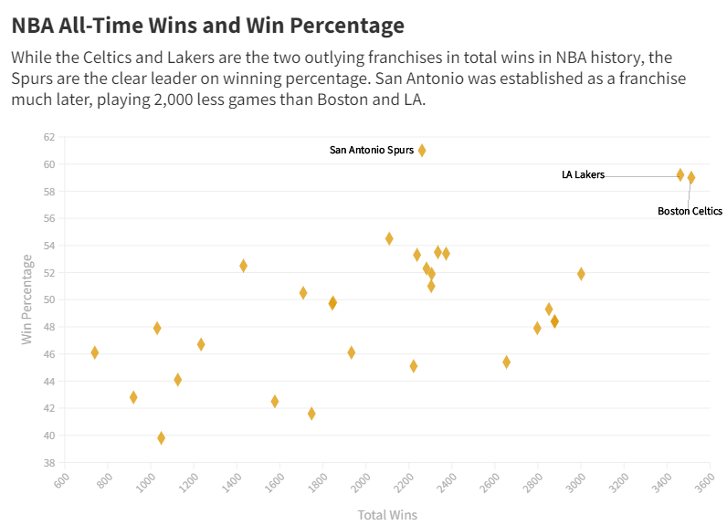

Finding the Best NBA Team of All-Time
By: Matt Haraden
The NBA has been around for many years and has seen many teams come and go through its doors. But looking at the history of the game, people often debate who the greatest team in league history is. When looking to find the best team of all-time, the first thing you would think is, well, who won the most games?

Of course this stat doesn't measure everything. Obviously the teams who have been around longer will have won more games. Looking at teams based on their winning percentage would be a more accurate way to describe how good they are in the regular season.
While the Celtics and Lakers had the most wins in the regular season by a significant margin, the San Antonio Spurs are actually the better winning team in the regular season. Since they came to the NBA in the 1970s, they have played a lot less games, but are more efficient in the years they have been in the league.
Another thing people point to when looking for the best franchise is championships. The best team ever would, in theory, have the most NBA championships.

Again, it's the Celtics and the Lakers and nobody else is even close. However, with the teams that haven't been in the league as long we have to do the same test as we did for the regular season. Could there be a better team in the playoffs than the Lakers and Celtics?

There's a lot to break down with this chart. The Lakers by far have the most wins and highest winning percentage. The Spurs make the playoffs in a more effiecient manner than the Lakers. But, fairly easily, the Lakers are the best team when it comes down to the playoffs.
So, with all this in mind, what would happen if all these numbers are put side by side to find out who the best NBA team ever truly is.

The Lakers have been at the top of almost all of these graphs and can pretty comfortably be crowned as the best franchise in NBA history. No team even came close to topping their 32 NBA Finals appearances.
All of this data was retrieved from the NBA archives.